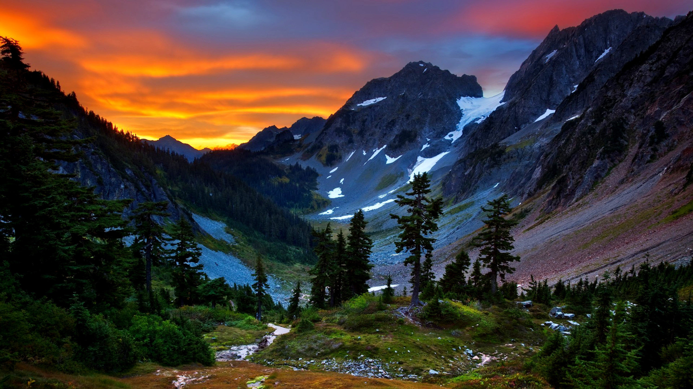
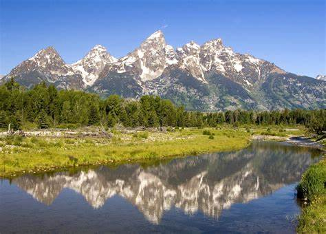

Animals live all around the world, from the South pole, to the
equater, and up North. There are some truly amazing animals
on earth, and this website will display one of them, the
Arctic Wolf. The white coat of the Arctic Wolf really stands out
against the other types wolves. If your interested in finding out
more about Arctic Wolves, select a tab above!
Wolves are a class of the canine family, and they seem to do very well in the right environment. In fact, they are the largest of all canines with exception of some dog species...
Animals.NET aim to promote interest in nature and animals among children, as well as raise their awareness in conservation and environmental protection
The Arctic wolf is a class of the gray wolf (Canis lupus). Arctic wolves dwell in a number of...

Within the Shubenacadie Wildlife Park's 40 hectares is all the wonder and excitement millions of visitors have enjoyed for over sixty years.

Our mission is to conserve nature and reduce the most pressing threats to the diversity of life on Earth...